library(omicScope)
library(ggplot2)
gtf <- rtracklayer::import("../test-bam/Mus_musculus.GRCm38.102.gtf.gz")
# test
coverage_plot(bam_file <- c("../test-bam/0a.sorted.bam",
"../test-bam/0b.sorted.bam",
"../test-bam/10a.sorted.bam",
"../test-bam/10b.sorted.bam"),
sample_name <- c("day0-rep1","day0-rep2","day10-rep1","day10-rep2"),
gtf_file = gtf,
target_gene = c("Nanog","Actb"))7 Coverage plot
7.1 Introduction
The coverage_plot function in omicscope simplifies the creation of genomic coverage plots. Instead of the cumbersome process of converting BAM files to BigWig, this function works directly with your alignment files, saving you valuable time and effort. It produces crisp, publication-level graphics suitable for various sequencing applications. This makes it an essential tool not just for RNA-seq, but for anyone working with data from ATAC-seq, ChIP-seq, or CUT&Tag experiments.
7.2 Make a coverage plot
7.3 Gene plot
Using aligned BAM files and a GTF annotation file, we can specify genes for visualization via the target_gene parameter. Here, we’ll examine the expression changes of the pluripotency gene Nanog and the housekeeping gene Actb on Day 0 versus Day 10 of stem cell differentiation:
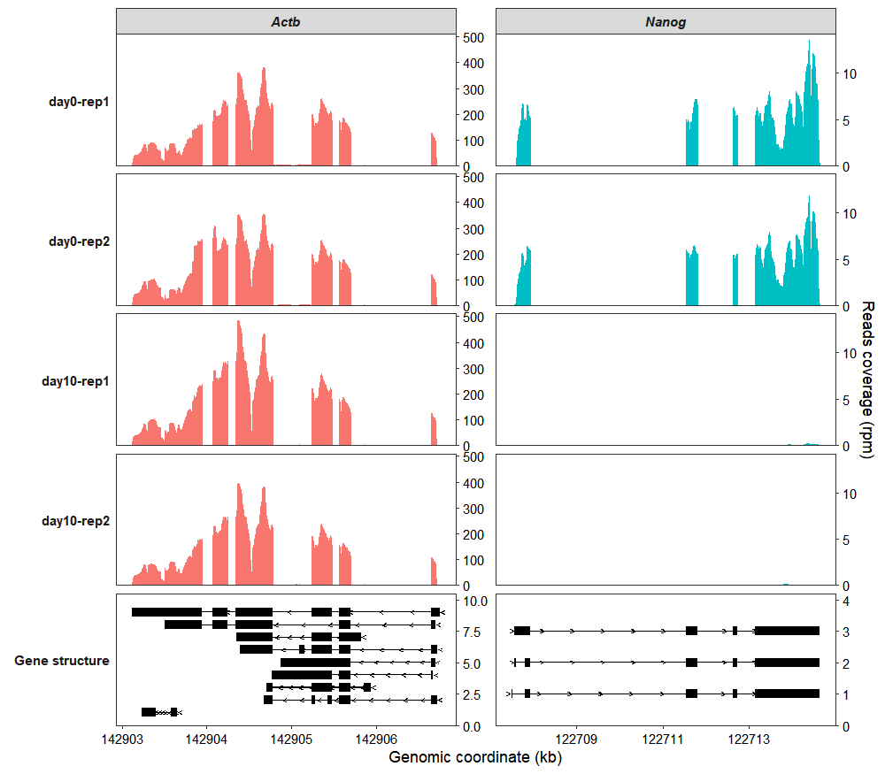
In the bottom panel, the arrows on the gene structure indicate the direction of transcription. Arrows pointing to the right represent genes on the positive (+) strand, while those pointing to the left represent genes on the negative (-) strand.
To simplify the y-axis and show only a range label instead of the full axis, set both the add_range_label and remove_labelY parameters to TRUE:
coverage_plot(bam_file <- c("../test-bam/0a.sorted.bam",
"../test-bam/0b.sorted.bam",
"../test-bam/10a.sorted.bam",
"../test-bam/10b.sorted.bam"),
sample_name <- c("day0-rep1","day0-rep2","day10-rep1","day10-rep2"),
gtf_file = gtf,
target_gene = c("Nanog","Actb"),
add_range_label = TRUE,
remove_labelY = TRUE)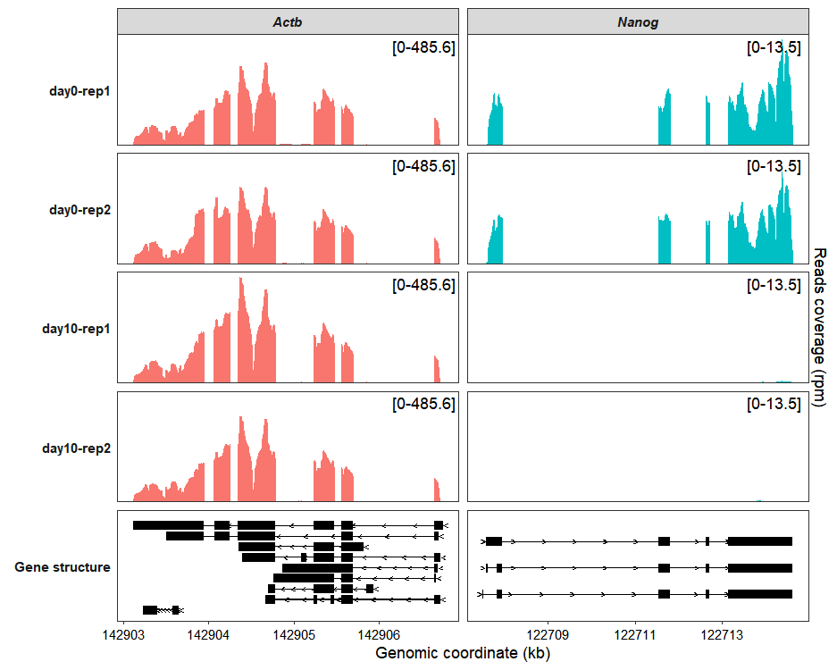
Use the sample_order and gene_order parameters to reorder the samples and genes:
coverage_plot(bam_file <- c("../test-bam/0a.sorted.bam",
"../test-bam/0b.sorted.bam",
"../test-bam/10a.sorted.bam",
"../test-bam/10b.sorted.bam"),
sample_name <- c("day0-rep1","day0-rep2","day10-rep1","day10-rep2"),
gtf_file = gtf,
target_gene = c("Nanog","Actb"),
sample_order = c("day0-rep1","day10-rep1","day0-rep2","day10-rep2"),
gene_order = c("Actb","Nanog"))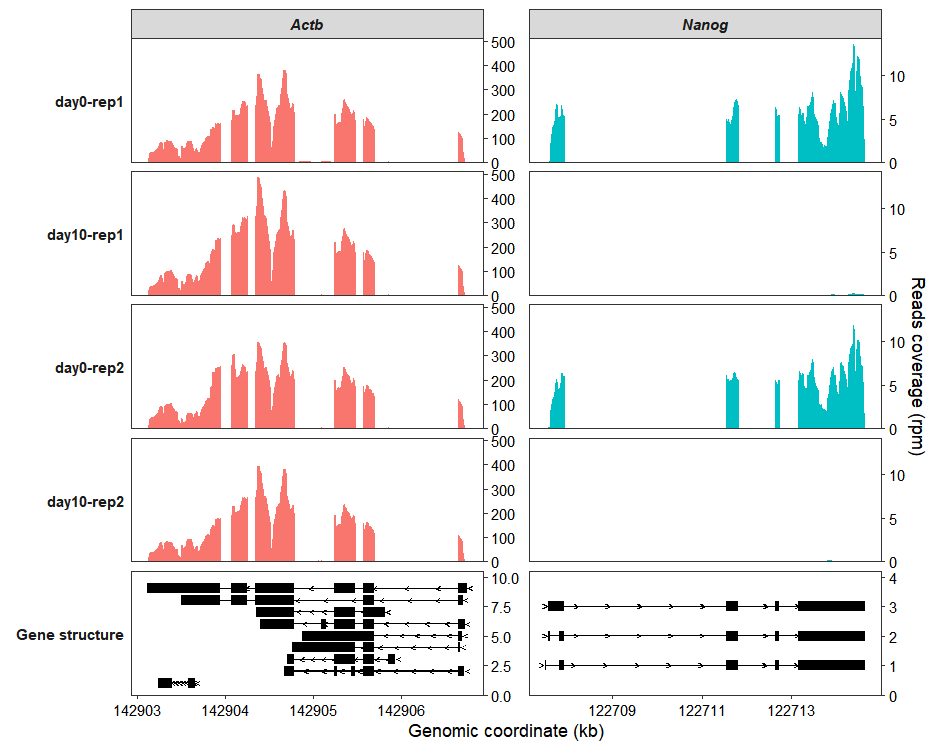
Use the group_name parameter to assign samples to groups. Setting merge_group to TRUE will then display the mean coverage across biological replicates for each group:
coverage_plot(bam_file <- c("../test-bam/0a.sorted.bam",
"../test-bam/0b.sorted.bam",
"../test-bam/10a.sorted.bam",
"../test-bam/10b.sorted.bam"),
sample_name <- c("day0-rep1","day0-rep2","day10-rep1","day10-rep2"),
group_name = c("Day-0","Day-0","Day-10","Day-10"),
gtf_file = gtf,
target_gene = c("Nanog","Actb"),
merge_group = TRUE)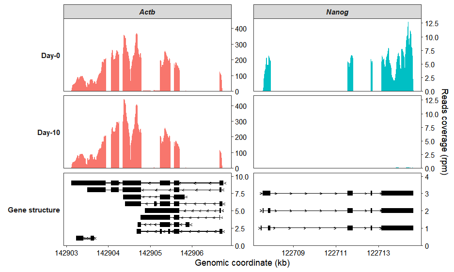
Set collapse_exon = TRUE to collapse all of a gene’s transcripts for visualization:
coverage_plot(bam_file <- c("../test-bam/0a.sorted.bam",
"../test-bam/0b.sorted.bam",
"../test-bam/10a.sorted.bam",
"../test-bam/10b.sorted.bam"),
sample_name <- c("day0-rep1","day0-rep2","day10-rep1","day10-rep2"),
group_name = c("Day-0","Day-0","Day-10","Day-10"),
gtf_file = gtf,
target_gene = c("Nanog","Actb"),
merge_group = TRUE,
collapse_exon = TRUE,
exon_linewidth = 8)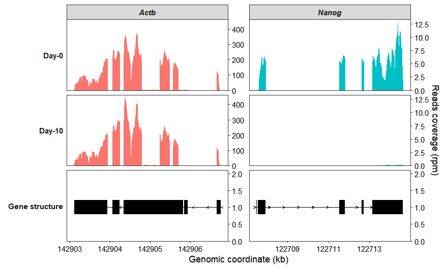
If you want to make the gene structure panel at the bottom shorter, you can use the theme_sub_panel function:
coverage_plot(bam_file <- c("../test-bam/0a.sorted.bam",
"../test-bam/0b.sorted.bam",
"../test-bam/10a.sorted.bam",
"../test-bam/10b.sorted.bam"),
sample_name <- c("day0-rep1","day0-rep2","day10-rep1","day10-rep2"),
group_name = c("Day-0","Day-0","Day-10","Day-10"),
gtf_file = gtf,
target_gene = c("Nanog","Actb"),
merge_group = TRUE,
collapse_exon = TRUE,
exon_linewidth = 8) +
theme_sub_panel(heights = unit(c(3,3,1),"cm"))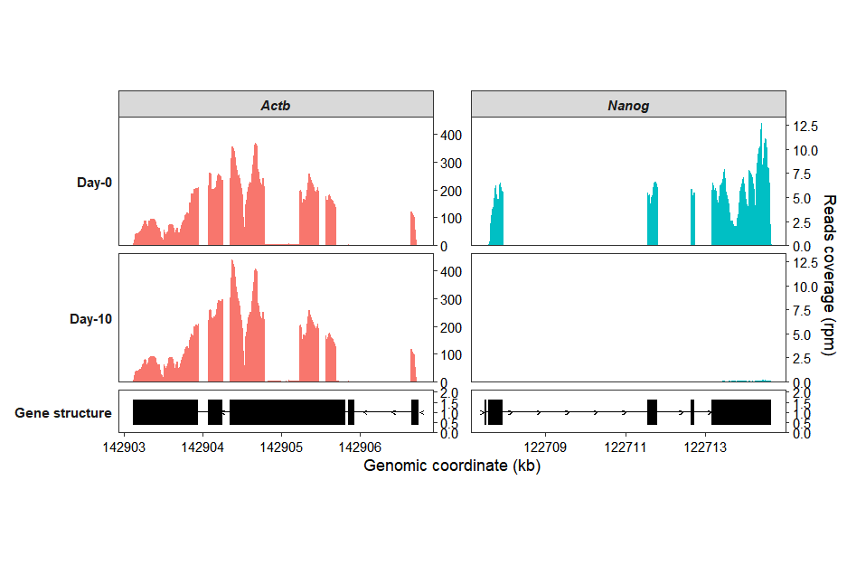
Modify colors using standard ggplot2 syntax, or set them directly with the exon_col (for exons) and arrow_col (for intron lines) parameters:
coverage_plot(bam_file <- c("../test-bam/0a.sorted.bam",
"../test-bam/0b.sorted.bam",
"../test-bam/10a.sorted.bam",
"../test-bam/10b.sorted.bam"),
sample_name <- c("day0-rep1","day0-rep2","day10-rep1","day10-rep2"),
group_name = c("Day-0","Day-0","Day-10","Day-10"),
gtf_file = gtf,
target_gene = c("Nanog","Actb"),
merge_group = TRUE,
exon_col = "#05339C",arrow_col = "#05339C") +
scale_fill_manual(values = c(Actb = "#FAB12F",Nanog = "#696FC7")) +
scale_color_manual(values = c(Actb = "#FAB12F",Nanog = "#696FC7"))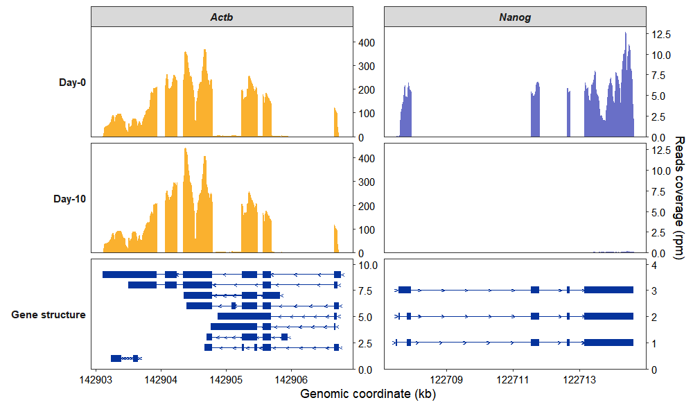
7.4 Genomic region plot
Besides plotting coverage for specific genes, the function also supports visualization of user-defined genomic regions. You can specify the target_region parameter with genomic coordinates in the format: chromosome:start_position-end_position (e.g., “chr1:1000000-2000000”):
coverage_plot(bam_file <- c("../test-bam/0a.sorted.bam",
"../test-bam/10a.sorted.bam"),
sample_name <- c("day0-rep1","day10-rep1"),
gtf_file = gtf,
target_region = c("1:127061844-128745904",
"2:121127504-121354559")
)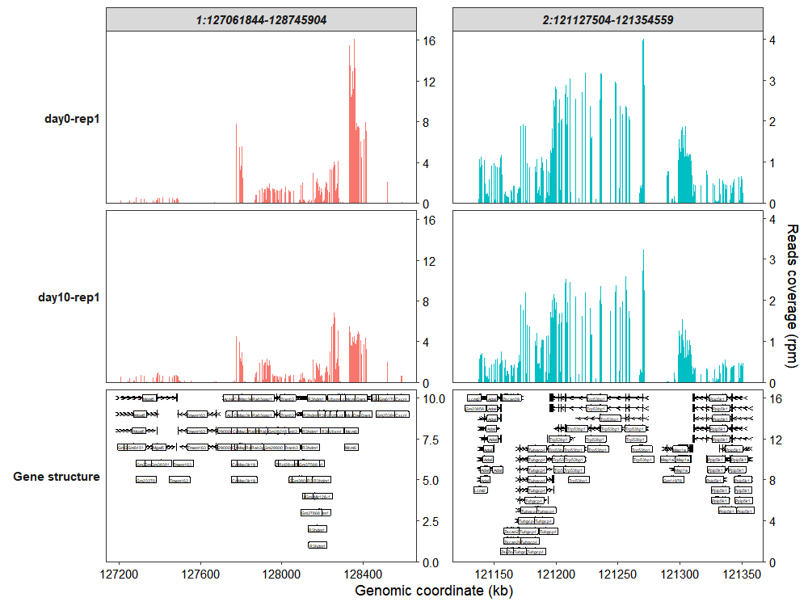
You can also set add_gene_label = FALSE to suppress gene name labeling:
coverage_plot(bam_file <- c("../test-bam/0a.sorted.bam",
"../test-bam/10a.sorted.bam"),
sample_name <- c("day0-rep1","day10-rep1"),
gtf_file = gtf,
target_region = c("1:127061844-128745904",
"2:121127504-121354559"),
add_range_label = TRUE,
remove_labelY = TRUE,
add_gene_label = FALSE)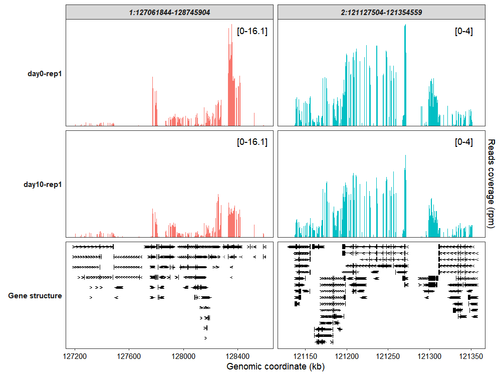
Collapse all exons into a single track:
coverage_plot(bam_file <- c("../test-bam/0a.sorted.bam",
"../test-bam/10a.sorted.bam"),
sample_name <- c("day0-rep1","day10-rep1"),
gtf_file = gtf,
target_region = c("1:127061844-128745904",
"2:121127504-121354559"),
add_gene_label = FALSE,
collapse_exon = TRUE,
exon_linewidth = 6)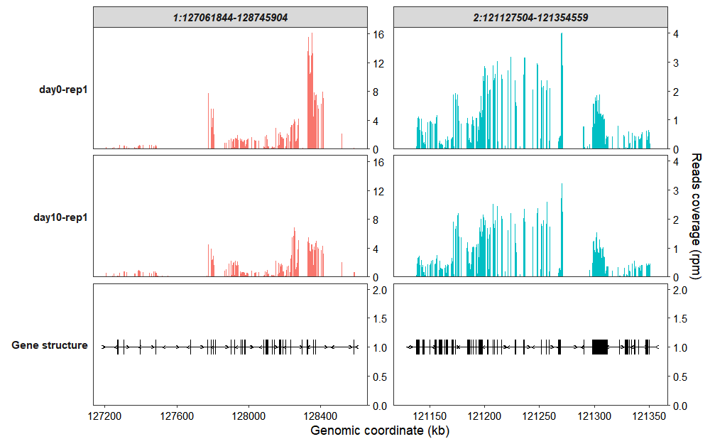
7.5 Y-axis range setting
The coverage_plot function, by default, maintains a uniform y-axis scale for all samples faceted by the same gene or genomic region. This approach ensures direct comparability, but for datasets with widely varying signal intensities across different groups, it may be necessary to define custom y-axis ranges for individual samples. This allows for a more tailored visualization that better accommodates the specific characteristics of the data.
This guide will explain how to set a custom y-axis display range for different samples.
To begin, let’s generate a default plot to observe its behavior:
library(ggplot2)
library(tidyverse)
library(omicScope)
gtf <- rtracklayer::import("../../index-data/Mus_musculus.GRCm38.102.gtf.gz")
coverage_plot(bam_file = c("../5.map-data/DMSOR1Input.bam",
"../5.map-data/DMSOR2Input.bam"),
sample_name = c("DMSO-12h-rep1", "DMSO-12h-rep2"),
gtf_file = gtf,
target_gene = c("Actb","Gapdh"),
add_range_label = TRUE,
remove_labelY = FALSE)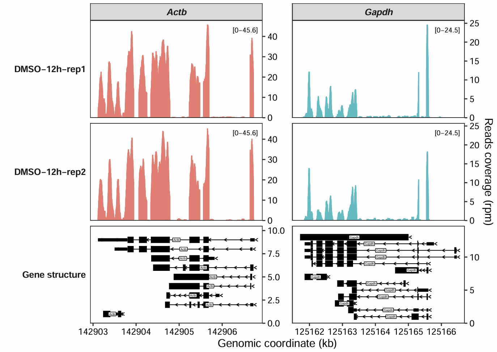
We can create a data frame containing gene_name, y_min, and y_max columns to specify the minimum and maximum y-axis range for each gene:
rg.cm <- data.frame(gene_name = c("Actb","Gapdh"),
y_min = c(-50,-25),
y_max = c(50,25))
rg.cm
# gene_name y_min y_max
# 1 Actb -50 50
# 2 Gapdh -25 25
coverage_plot(bam_file = c("../5.map-data/DMSOR1Input.bam",
"../5.map-data/DMSOR2Input.bam"),
sample_name = c("DMSO-12h-rep1", "DMSO-12h-rep2"),
gtf_file = gtf,
target_gene = c("Actb","Gapdh"),
add_range_label = TRUE,
remove_labelY = FALSE,
set_range_val = rg.cm)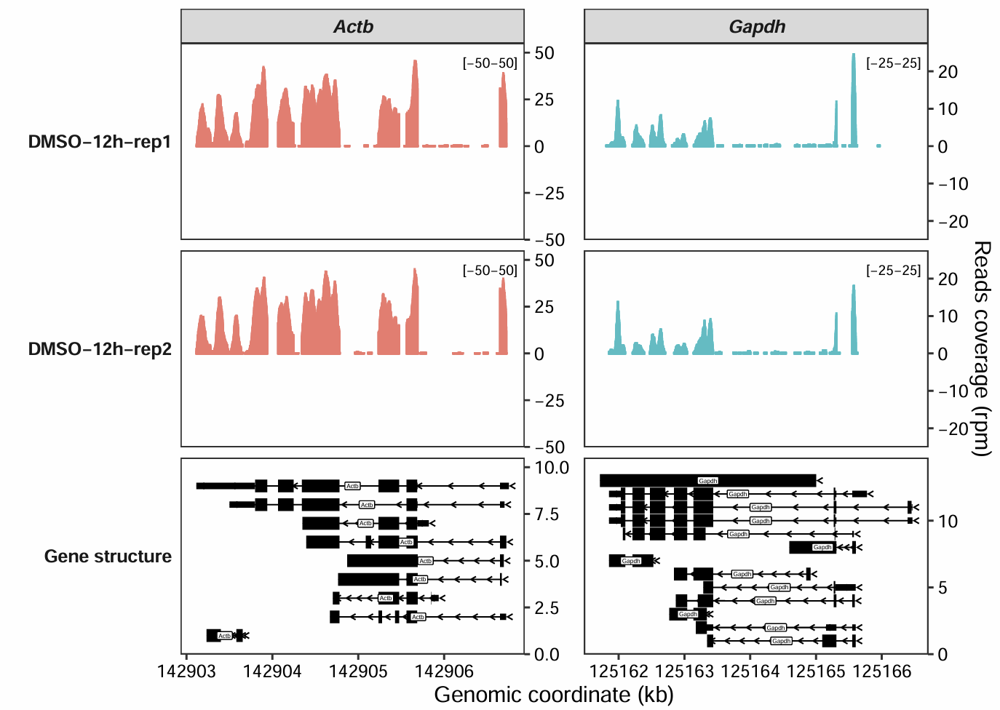
If you want to change the y-axis range for a specific sample, you can also add a sample column to the data frame, specifying the range for that particular sample:
rg.cm <- data.frame(gene_name = c("Actb"),
y_min = c(-50),
y_max = c(50),
sample = c("DMSO-12h-rep2"))
coverage_plot(bam_file = c("../5.map-data/DMSOR1Input.bam",
"../5.map-data/DMSOR2Input.bam"),
sample_name = c("DMSO-12h-rep1", "DMSO-12h-rep2"),
gtf_file = gtf,
target_gene = c("Actb","Gapdh"),
add_range_label = TRUE,
remove_labelY = FALSE,
set_range_val = rg.cm)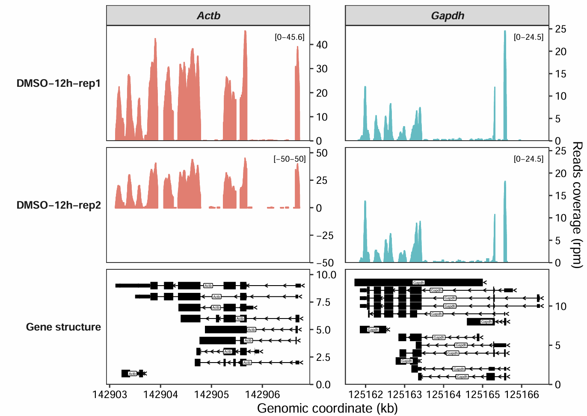
Similarly, when plotting for a specific genomic region, you just need to replace the gene_name column with target_region:
rg.cm <- data.frame(target_region = c("1:127061844-128745904",
"2:121127504-121354559"),
y_min = c(-20,-1),
y_max = c(50,2))
coverage_plot(bam_file = c("../5.map-data/DMSOR1Input.bam",
"../5.map-data/DMSOR2Input.bam"),
sample_name = c("DMSO-12h-rep1", "DMSO-12h-rep2"),
gtf_file = gtf,
target_region = c("1:127061844-128745904",
"2:121127504-121354559"),
add_range_label = TRUE,
remove_labelY = FALSE,
set_range_val = rg.cm)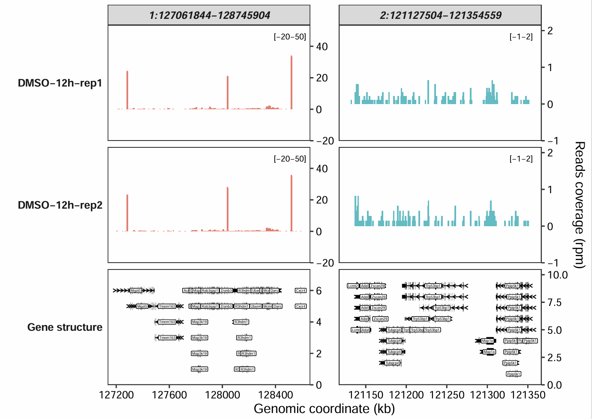
7.6 Add peaks annotation
Sometimes, you may need to add annotation regions at specific genomic locations, such as the peak regions called by MACS2 in a ChIP-seq analysis.
To do this, you can provide a data frame with the following columns: seqnames, start, end, sample, gene_name, and sample_name.
Key requirements for this data frame are:
If you are plotting for a specific genomic interval, replace the
gene_namecolumn withtarget_region.The
samplecolumn must contain the fixed string"Peaks"for all entries. This tells the function to draw these regions on a dedicated peak track.The
sample_namecolumn is used to specify which original sample the peak data belongs to, allowing you to distinguish peaks from different experiments.
bd <- subset(gtf,gene_name %in% c("Actb", "Gapdh") & type == "exon" &
transcript_biotype == "protein_coding") |>
data.frame() |>
dplyr::select(seqnames, start, end, gene_name, transcript_id) |>
dplyr::mutate(sample = "Peaks")
bd$sample_name <- sample(c("Peaks-1","Peaks-2","Peaks-3"),nrow(bd),replace = T)
head(bd)
# seqnames start end gene_name transcript_id sample sample_name
# 641049 5 142906652 142906754 Actb ENSMUST00000100497 Peaks Peaks-1
# 641050 5 142905564 142905692 Actb ENSMUST00000100497 Peaks Peaks-3
# 641053 5 142905237 142905476 Actb ENSMUST00000100497 Peaks Peaks-2
# 641055 5 142904344 142904782 Actb ENSMUST00000100497 Peaks Peaks-2
# 641057 5 142904067 142904248 Actb ENSMUST00000100497 Peaks Peaks-2
# 641059 5 142903115 142903941 Actb ENSMUST00000100497 Peaks Peaks-1Now, let’s generate the plot by passing the peaks data frame we created above to the peaks_data argument:
coverage_plot(bam_file = c("../5.map-data/DMSOR1Input.bam",
"../5.map-data/DMSOR2Input.bam"),
sample_name = c("DMSO-12h-rep1", "DMSO-12h-rep2"),
gtf_file = gtf,
target_gene = c("Actb","Gapdh"),
add_range_label = TRUE,
remove_labelY = FALSE,
peaks_data = bd)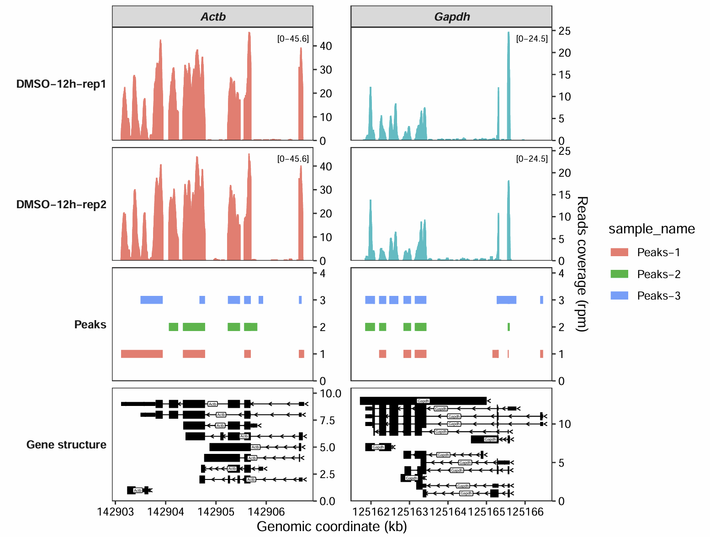
7.7 New features
We are constantly working to enhance the coverage_plot function. Below is a description of the latest features and improvements.
7.7.1 Input bigwig files
In addition to directly processing BAM files, coverage_plot now supports BigWig files. As a popular format for visualization with a smaller file size, BigWig provides a lightweight alternative for generating coverage plots.
library(omicScope)
gtf <- rtracklayer::import("../../index-data/Mus_musculus.GRCm38.102.gtf.gz")
coverage_plot(bw_file = c("../7.bw-data/scrinput.bw","../7.bw-data/scrDinput.bw"),
sample_name = c("dmso","treat"),
gtf_file = gtf,
target_gene = "Nanog")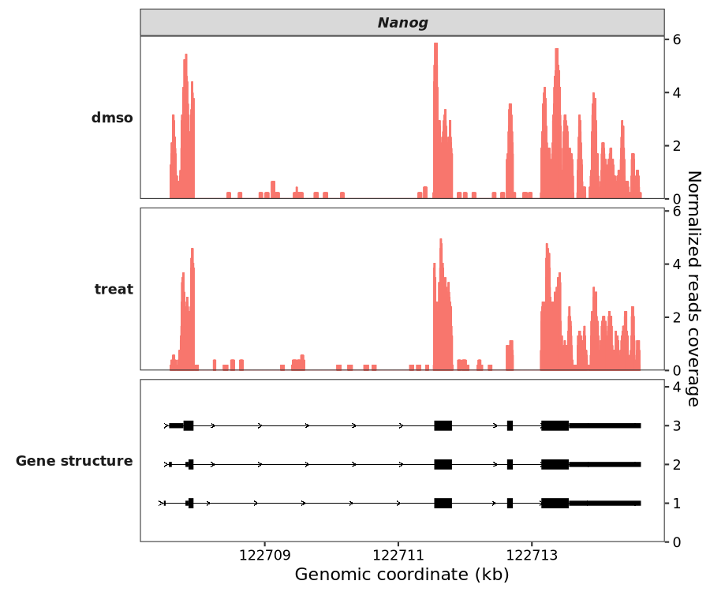
Plotting a specific genomic region:
coverage_plot(bw_file = c("../7.bw-data/scrinput.bw","../7.bw-data/scrDinput.bw"),
sample_name = c("dmso","treat"),
gtf_file = gtf,
target_region = "5:76176615-76376575")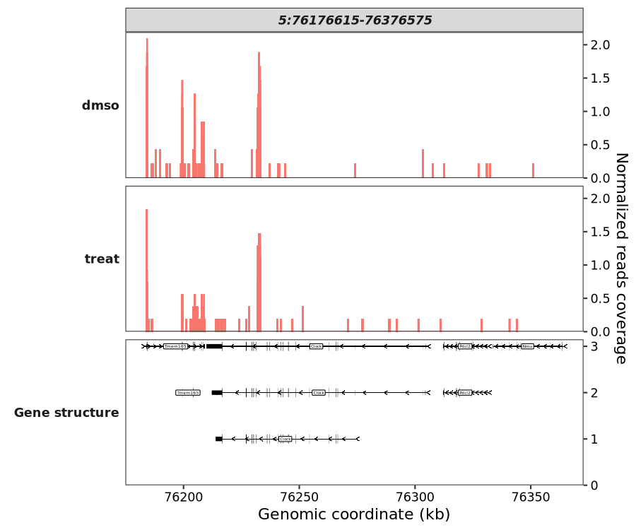
7.7.2 UTR region visualization
As you may notice in the plot above, UTR regions are rendered with thinner lines than CDS regions. This new feature allows for better visual distinction between the coding and non-coding portions of a gene. To render all exons with a uniform width, you can set show_utr = FALSE:
coverage_plot(bw_file = c("../7.bw-data/scrinput.bw","../7.bw-data/scrDinput.bw"),
sample_name = c("dmso","treat"),
gtf_file = gtf,
target_gene = "Nanog",
show_utr = FALSE)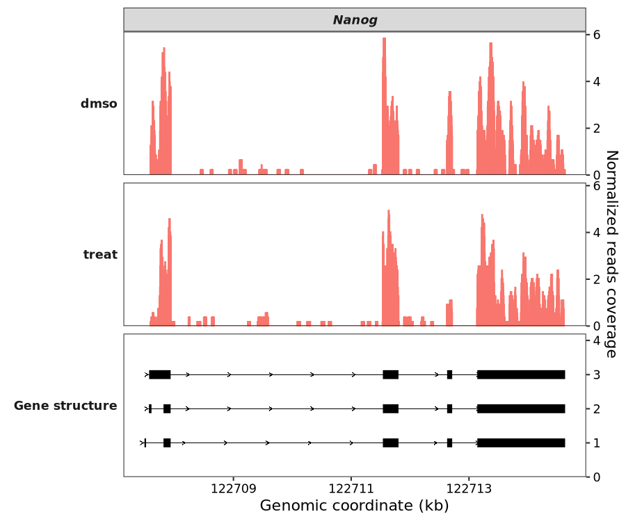
7.7.3 Highlight specific region
Sometimes, you may want to visually emphasize specific genomic areas. To do this, simply prepare a data frame containing the coordinates of your target regions and pass it to the highlight_region parameter.
In the example below, we’ll highlight several exons within the Nanog gene:
g <- data.frame(gtf) |>
dplyr::filter(gene_name == "Nanog" & type == "exon" & transcript_id == "ENSMUST00000012540") |>
dplyr::arrange(dplyr::desc(width)) |>
dplyr::select(seqnames,start,end) |>
dplyr::mutate(type = factor(1:n()))
g
# seqnames start end type
# 1 6 122713142 122714633 1
# 2 6 122707568 122707933 2
# 3 6 122711538 122711803 3
# 4 6 122712629 122712715 4Plot highlight region:
coverage_plot(bam_file = c("scrinput.bam","scrinput.bam"),
sample_name = c("dmso","treat"),
gtf_file = gtf,
target_gene = "Nanog",
highlight_region = g)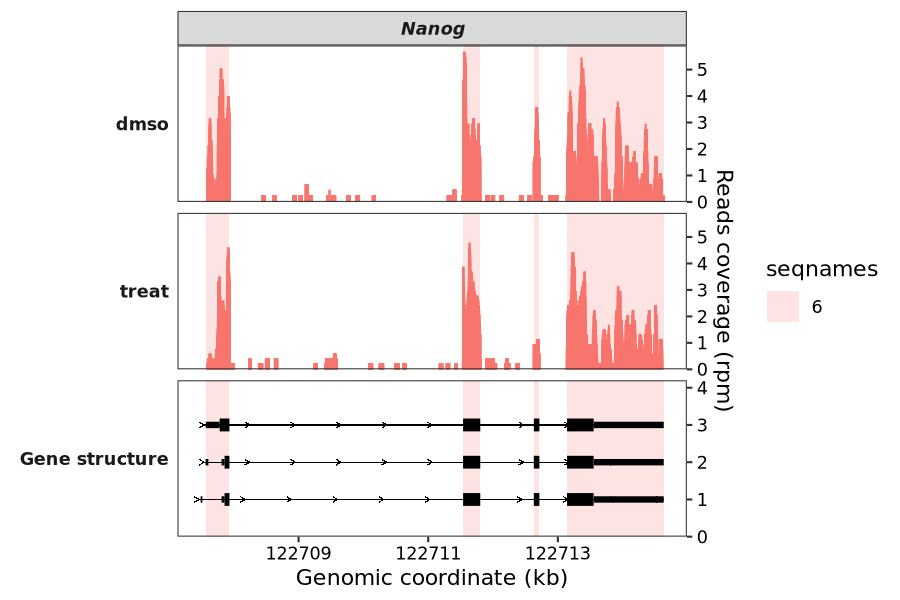
The name of the column to use for color mapping:
coverage_plot(bam_file = c("scrinput.bam","scrDinput.bam"),
sample_name = c("dmso","treat"),
gtf_file = gtf,
target_gene = "Nanog",
highlight_region = g,
highlight_col_aes = "type")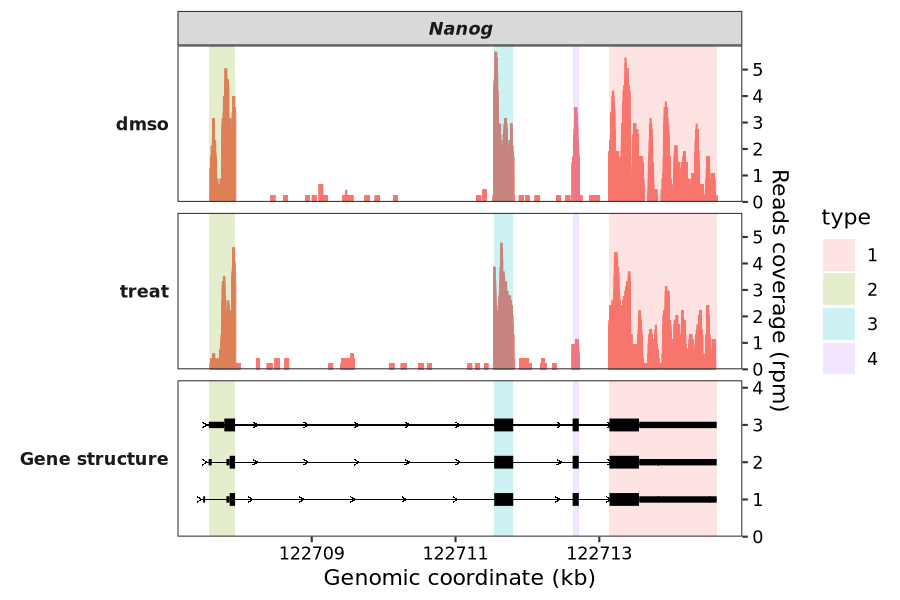
7.8 Implementation with Signac
When analyzing single-cell epigenomic data such as scATAC-seq, packages like Signac have become a standard tool in the field. Building on its powerful foundation, we have developed an enhanced alternative to Signac’s CoveragePlot function. Our implementation, which generates plots like the coverage_plot shown previously, offers improved customizations and features.
To begin, we assume you have a SeuratObject containing scATAC-seq data. The workflow for creating this object is detailed in the official “Analyzing PBMC scATAC-seq” tutorial, so we will not repeat it here. Let’s start by loading the required libraries and our sample data:
library(omicScope)
library(Seurat)
library(Signac)
library(ggplot2)
library(dplyr)
source(system.file("extdata/single-cell-utils.R", package = "omicScope"))
# load PBMC dataset
load("pbmc.rda")
pbmc
# An object of class Seurat
# 185049 features across 9641 samples within 2 assays
# Active assay: peaks (165434 features, 165434 variable features)
# 2 layers present: counts, data
# 1 other assay present: RNA
# 2 dimensional reductions calculated: lsi, umap
# load gtf file
hm <- rtracklayer::import.gff("gencode.v49.annotation.gtf.gz")7.8.1 Basic plot
Let’s first visualize the data using Signac’s default plotting function:
CoveragePlot(object = pbmc,
region = c("CD8A","CD4"),
extend.upstream = 2000,
extend.downstream = 2000)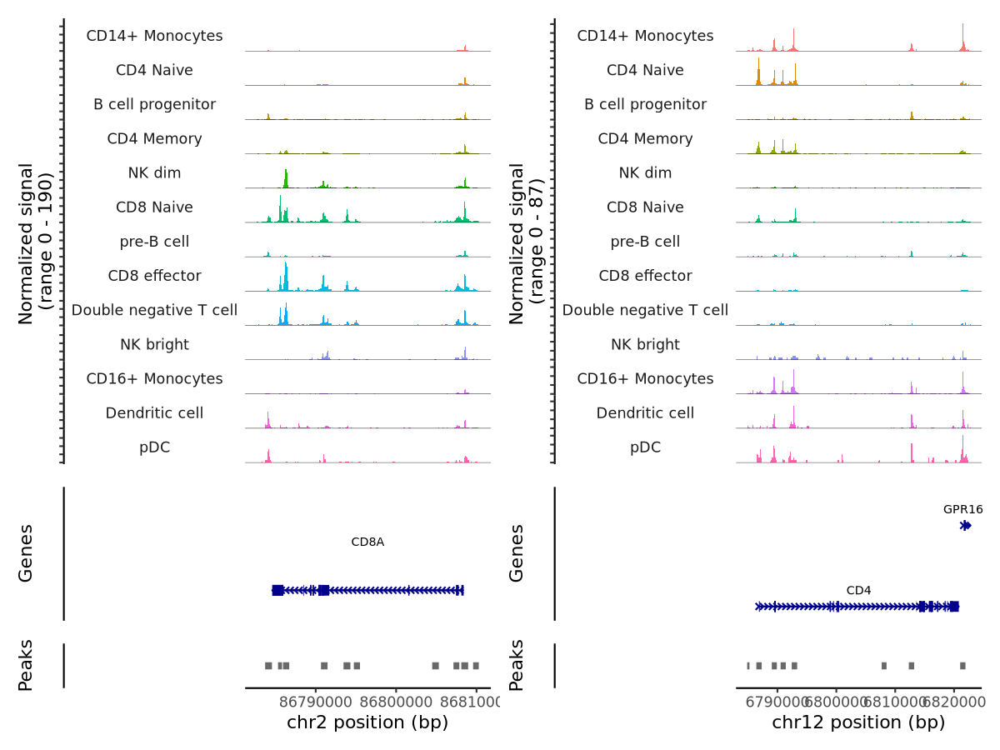
Now, let’s make a plot using scCoverage_plot:
scCoverage_plot(object = pbmc,
gtf_file = hm,
target_gene = c("CD8A","CD4"))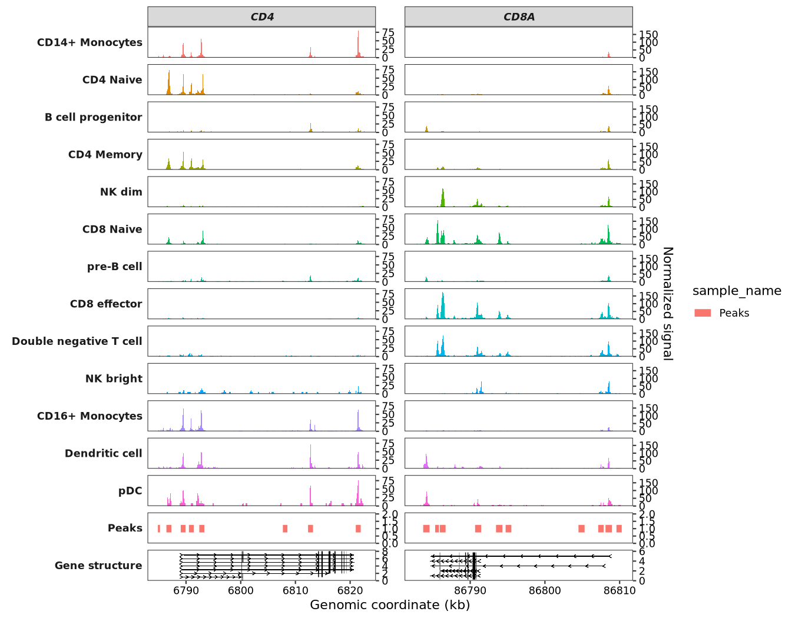
Alternatively, you can specify a genomic region to plot:
scCoverage_plot(object = pbmc,
gtf_file = hm,
target_region = "chr2:86784605-86808396")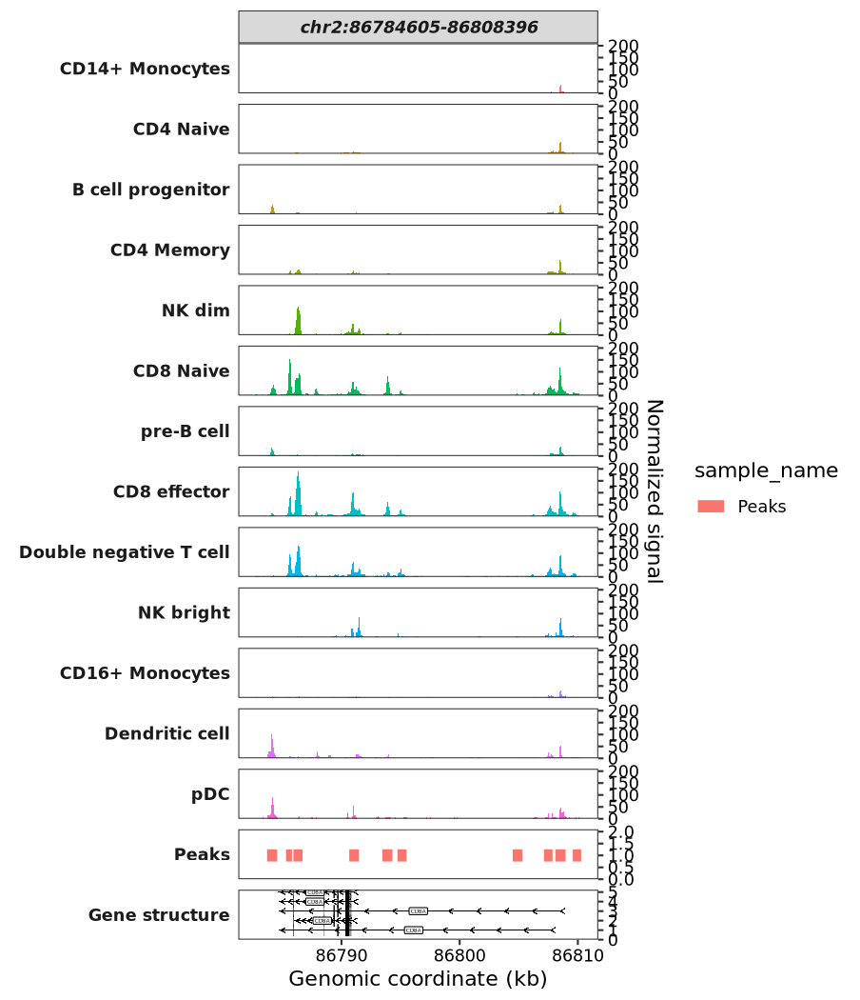
Adding a new signal range label:
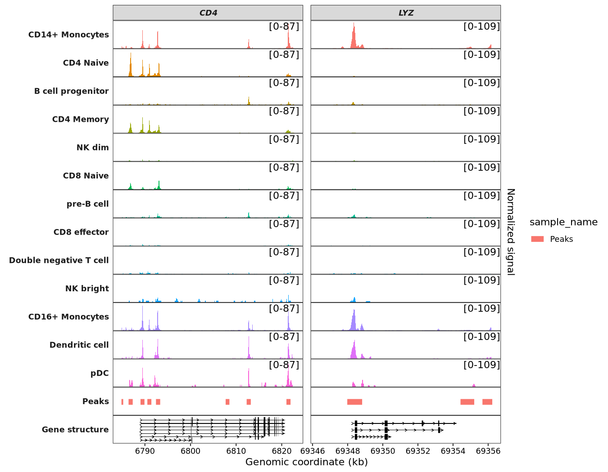
Visualizing multiple genes by collapsing different transcripts into a single gene model:
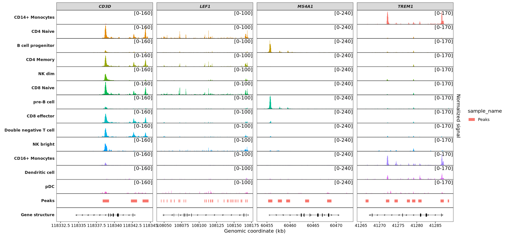
7.8.2 Add links panel
Link data is typically used for analyzing datasets such as Hi-C, co-accessibility, and enhancer-promoter interactions. For this example, we will randomly generate links between different sites within the CD8A gene for demonstration purposes. Please note that this data is purely illustrative and has no actual biological significance.
Important: When generating the links_data, the seqnames, start, end, and sample columns are required. Furthermore, if you are using the target_gene parameter, a corresponding gene_name column must be provided. Similarly, using the target_region parameter requires a target_region column:
gfl <- hm |> data.frame() |>
filter(gene_name == "CD8A" & type == "gene")
from <- sample(gfl$start:gfl$end,20,replace = T)
links <- data.frame(seqnames = gfl$seqnames[1],
start = sample(gfl$start:gfl$end,40,replace = T),
end = sample(gfl$start:gfl$end,40,replace = T),
score = sample(seq(0,1,0.01),40,replace = T),
sample = rep(c("links-1","links-2"),20),
gene_name = "CD8A") |>
dplyr::filter(end > start)
head(links)
# seqnames start end score sample gene_name
# 1 chr2 86794131 86797385 0.56 links-1 CD8A
# 2 chr2 86795722 86803883 0.08 links-1 CD8A
# 3 chr2 86790482 86793071 0.35 links-2 CD8A
# 4 chr2 86804095 86808098 0.99 links-1 CD8A
# 5 chr2 86797230 86798150 0.92 links-2 CD8A
# 6 chr2 86786291 86799074 0.65 links-1 CD8ATo visualize the links, pass the data you prepared to the links_data argument:
scCoverage_plot(object = pbmc,
gtf_file = hm,
target_gene = "CD8A",
links_data = links)
7.8.3 Add peaks panel
Peaks data generally refers to DNA binding regions found by peak callers such as MACS2, although it can represent any genomic regions.
For data preparation, your data frame must include the following columns: seqnames, start, end, and sample. Critically, every entry in the sample column must be the string 'Peaks'. Additionally, you need a sample_name column to identify different samples. Please also note the conditional requirements: if you are using the target_gene parameter, a corresponding gene_name column must be provided. Similarly, using the target_region parameter requires a target_region column.
Below, we will generate some random BED-formatted data to visualize this:
peaks <- data.frame(seqnames = gfl$seqnames[1],
start = sample(gfl$start:gfl$end,40,replace = T),
end = sample(gfl$start:gfl$end,40,replace = T),
score = sample(seq(0,1,0.01),40,replace = T),
sample = "Peaks",
sample_name = rep(c("peaks-1","peaks-2"),20),
gene_name = "CD8A") |>
dplyr::filter(end > start)
head(peaks)
# seqnames start end score sample sample_name gene_name
# 1 chr2 86787803 86797842 0.42 Peaks peaks-2 CD8A
# 2 chr2 86787870 86793469 0.72 Peaks peaks-1 CD8A
# 3 chr2 86790426 86805815 0.92 Peaks peaks-2 CD8A
# 4 chr2 86787409 86792736 0.02 Peaks peaks-1 CD8A
# 5 chr2 86793777 86797484 1.00 Peaks peaks-2 CD8A
# 6 chr2 86793063 86802052 0.29 Peaks peaks-1 CD8ATo visualize the peaks, pass your data to the peaks_data argument:
scCoverage_plot(object = pbmc,
gtf_file = hm,
target_gene = "CD8A",
peaks_data = peaks)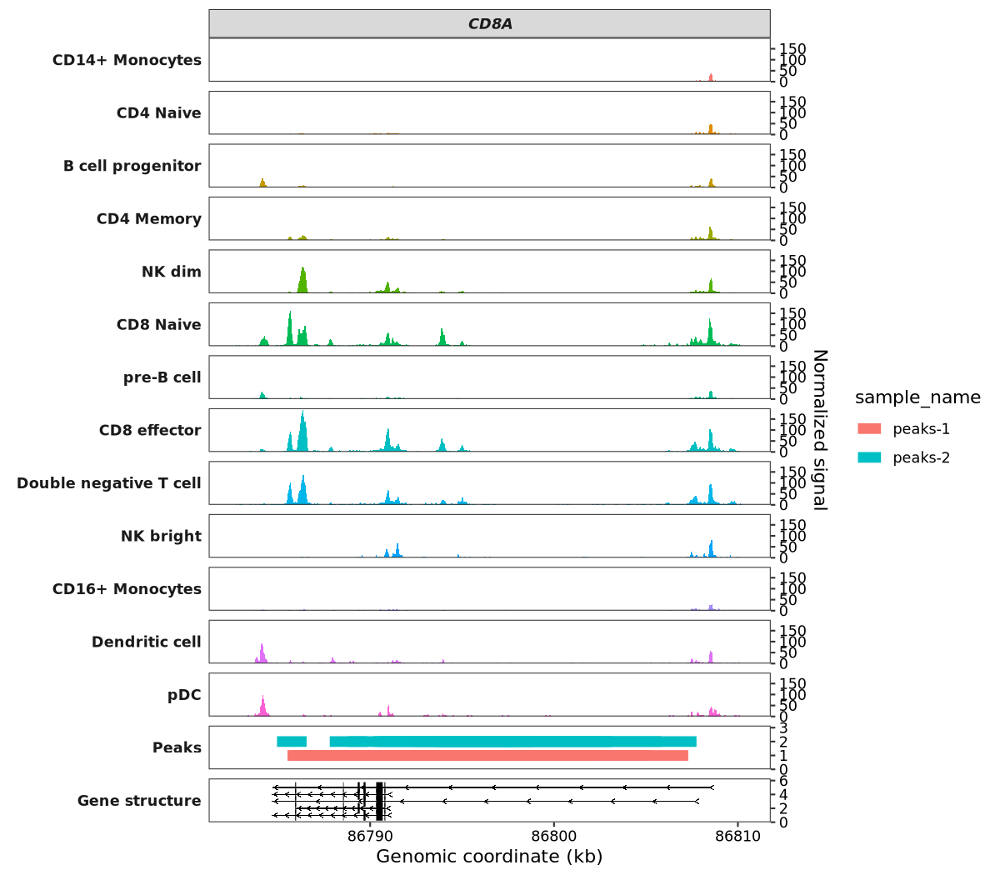
Next, let’s visualize both the links and peaks data on the same plot:
scCoverage_plot(object = pbmc,
gtf_file = hm,
target_gene = "CD8A",
links_data = links,
peaks_data = peaks)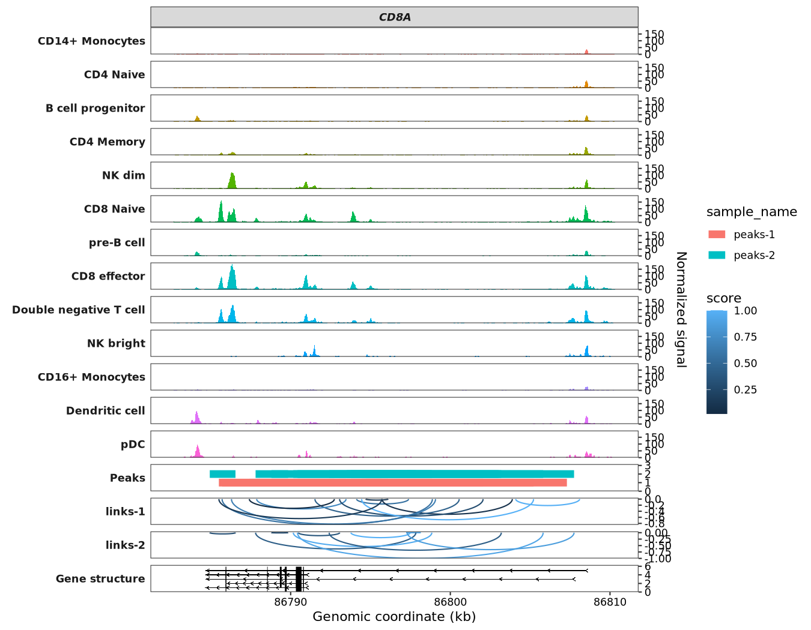